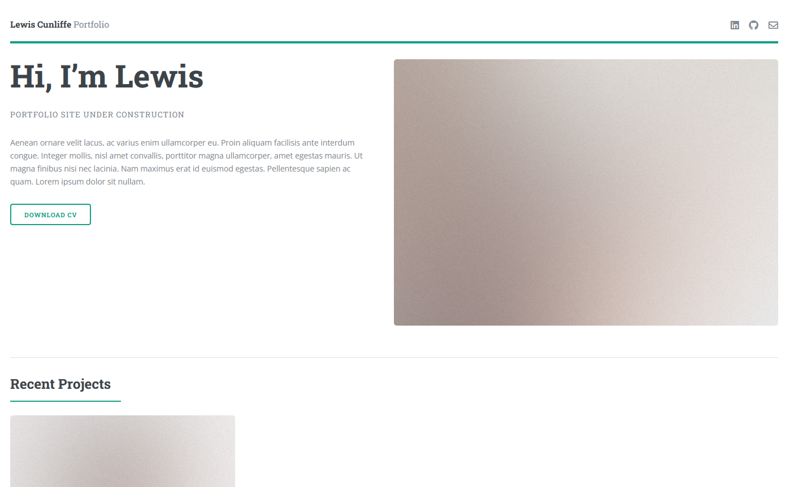

This Website

The first project I want to write about is this website! There’s not much to say, this entry is mainly a template for future additions. For a while, I’ve felt like I needed somewhere to discuss the projects that I am working on. GitHub readmes work fine, but I wanted something a little more presentable. So here we are!
Development
I wasn’t familiar with web development when I started making this website. The first steps were to get comfortable with it, so I researched a lot into HTML, CSS, JavaScript and different frameworks such as Bootstrap. After I did become more familiar, I began developing and started to consider the design of the site.
After some consideration, I realised that the site should be simple. My focus isn’t web design, its data science so I wanted something that was easy to ready rather than pretty. After some of my own attempts, I found a design that was almost identical to what I had in mind from HTML5 UP. After retooling it for my own needs, a template for the site was complete.
As of writing this entry, the site is still at a template stage for future use as I begin to include more of my projects. It might even be that this text or the screenshot above is outdated and needs updating. In the end, I chose a simple yet effective design so that I could focus on my actual work.